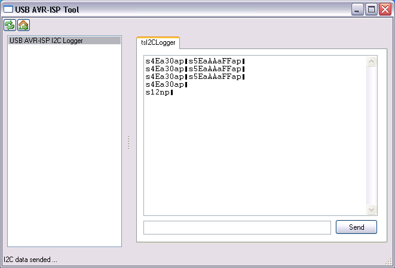

Status: fertig
Der I2C-Logger kann I2C-Signale bis 200 kHz mitschneiden und I2C-Daten mit 100 kHz senden. Als P- Software kommt hier das AVR-ISP-Tool zum Einsatz.
Download
Die Firmware ist im AVR USB-Lab Tool enthalten.Pinbelegung
SCL = Pin 5 der 10-poligen Schnittstelle
SDA = Pin 1 der 10-poligen Schnittstelle
Benutzung
Zeichen:
- s kennzeichnet eine Startbedingung
- p kennzeichnet eine Stoppbedingung
- n kennzeichnet ein NACK
- a kennzeichnet ein ACK
Alle Datenbytes werden hexadezimal 2-stellig dargestellt.
Screenshots

Anzeigeelemente
- blaue LED: Sie zeigt die PC-Verbindung an
Betriebsysteme
Windows 98
Windows 2000
Windows XP
Windows Server 2008
Windows Vista
Windows 7
Linux